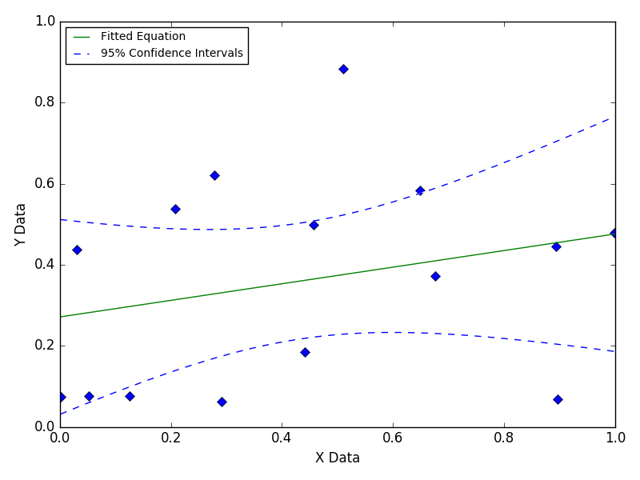
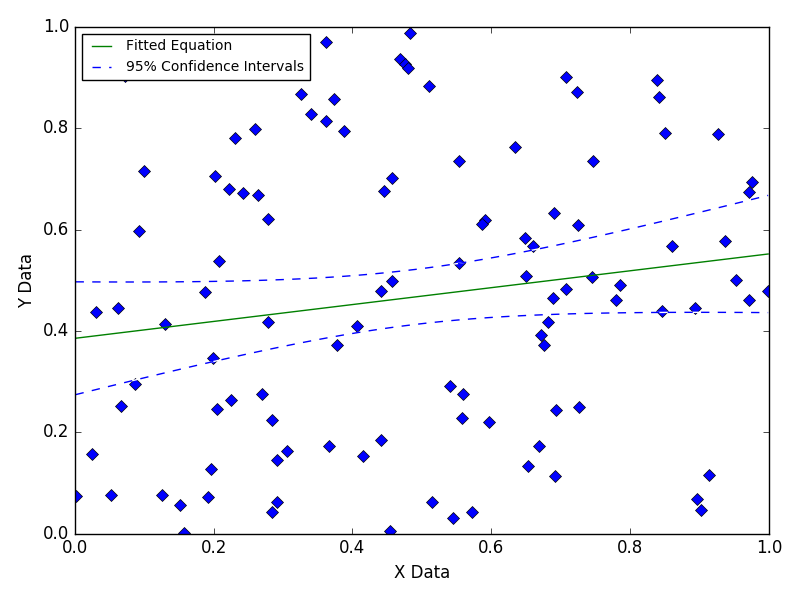

Fitting Random Data
This illustrates the effect of fitting completely random data that has no relationship of any kind.

Still Images

This illustrates the effect of fitting completely random data that has no relationship of any kind.

